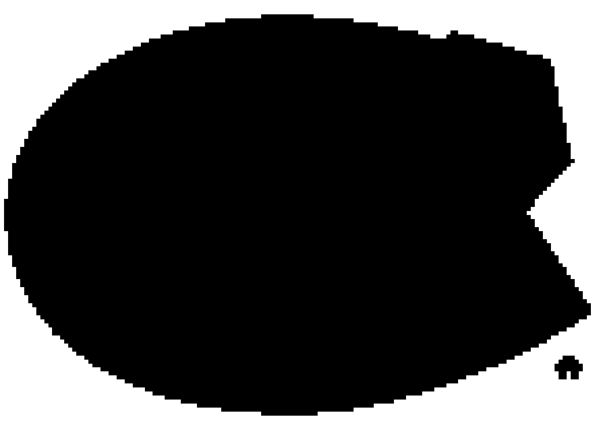

Code
# Load the magick library
library(magick)with magick
This document provides a practical guide to image processing in R using the magick package. The magick package is a powerful and versatile tool for image manipulation, providing a wide range of functions for reading, writing, editing, and transforming images. It is built on top of the ImageMagick library, a robust and feature-rich image processing software.
We will cover the basics of reading and writing images, as well as more advanced topics like color manipulation, transformations, and adding text and borders. We will also explore how to integrate magick with ggplot2 to create more visually appealing and informative plots.
# Load the magick library
library(magick)The first step in any image processing workflow is to read an image into R. The image_read() function can read images from a local file or a URL.
# Read an image from a local file
raw_logo <- image_read('./images/comb.webp')The image_info() function provides useful information about an image, such as its format, width, height, and colorspace.
image_info(raw_logo) format width height colorspace matte filesize density
1 WEBP 450 303 sRGB TRUE 49650 72x72The image_convert() function allows you to convert an image from one format to another.
new_png <- image_convert(raw_logo, "png")
image_info(new_png) format width height colorspace matte filesize density
1 PNG 450 303 sRGB TRUE 0 72x72The image_write() function saves an image to a file. You can specify the path and format of the output file.
image_write(new_png, path = "./images/new_png.png", format = "png")Let’s read in another image to demonstrate some basic manipulations.
raw_logo <- image_read('./images/logo1.png')
raw_logoThe image_fill() function can be used to fill areas of an image with a specified color. Here, we fill the white corners of the logo with green. The fuzz argument controls the tolerance of the color matching.
img_filled <- raw_logo %>%
image_fill("green", "+1+1", fuzz = 50, refcolor = "white") %>%
image_fill("green", "+140+1", fuzz = 50, refcolor = "white") %>%
image_fill("green", "+1+99", fuzz = 50, refcolor = "white") %>%
image_fill("green", "+140+99", fuzz = 50, refcolor = "white")
img_filledThe image_rotate() function rotates an image by a specified angle.
img_filled %>% image_rotate(45)The image_border() function adds a border to an image. You can specify the color and size of the border.
img_filled %>% image_border("#CD5C5C", "20x20")The image_transparent() function makes a specified color transparent. This is useful for creating images with transparent backgrounds.
# The fuzz argument (0-100) controls how similar colors need to be to be made transparent.
b = img_filled %>% image_transparent(color = 'green', fuzz = 10)
b
image_write(b, path = "images/b.png", format = "png")The image_colorize() function can be used to adjust the opacity of an image.
b = img_filled %>% image_colorize(opacity = 80, color = 'white')
bThe image_modulate() function can be used to adjust the brightness, saturation, and hue of an image.
b = img_filled %>% image_modulate(brightness = 30)
bThe image_blur() function applies a blur effect to an image. You can control the radius and sigma of the blur.
b = img_filled %>% image_blur(10, 5)
bThe image_annotate() function adds text to an image. You can specify the text, font, size, color, and gravity (position).
b = img_filled %>% image_annotate("The quick brown fox", font = 'Times', size = 20, gravity = "southwest", color = "red")
bThe image_resize() and image_scale() functions can be used to resize an image. image_resize() allows you to specify the new dimensions, while image_scale() scales the image by a factor.
b = img_filled %>% image_resize("200x200")
bimage_info(b) format width height colorspace matte filesize density
1 PNG 200 143 sRGB TRUE 0 72x72By combining several magick functions, we can perform more complex image manipulations. Here, we create a black and white version of the logo with a transparent background.
img_filled2 <- raw_logo %>%
image_fill("transparent", "+1+1", fuzz = 50, refcolor = "white") %>%
image_fill("transparent", "+140+1", fuzz = 50, refcolor = "white") %>%
image_fill("transparent", "+1+99", fuzz = 50, refcolor = "white") %>%
image_fill("transparent", "+140+99", fuzz = 50, refcolor = "white")
img_filled2 %>%
image_channel("Opacity") %>%
image_convert(matte = FALSE)
magick with ggplot2One of the most powerful features of magick is its ability to be integrated with ggplot2 to create more visually interesting plots.
We can use annotation_custom() and rasterGrob() to add an image as the background of a ggplot2 plot.
library(ggplot2)
library(png)
library(grid)
img <- readPNG("./images/new_png.png")
bees <- data.frame(distance = c(0.5, 1, 1.5, 2, 2.5, 3),
number = c(40, 34, 32, 22, 18, 10))
ggplot(data = bees, aes(x = distance, y = number)) +
annotation_custom(rasterGrob(img,
width = unit(1, "npc"),
height = unit(1, "npc")),
-Inf, Inf, -Inf, Inf) +
geom_point() +
xlab("Distance (km)") +
ylab("Number of Bees") +
ylim(0, 45)
The ggimage package provides geom_image(), which allows you to use images as points in a scatter plot.
library(ggimage)
bees$image <- "./images/bee.png"
ggplot(data = bees, aes(x = distance, y = number)) +
annotation_custom(rasterGrob(img,
width = unit(1, "npc"),
height = unit(1, "npc")),
-Inf, Inf, -Inf, Inf) +
geom_image(aes(image = image), size = 0.15) +
xlab("Distance (km)") +
ylab("Number of Bees") +
ylim(0, 45)
The cowplot package provides ggdraw() and draw_image() which make it easy to add a logo or other images to your ggplot2 plots.
library(cowplot)
img2 = image_read("./images/logo1.png")
p = ggplot(data = bees, aes(x = distance, y = number)) +
annotation_custom(rasterGrob(img,
width = unit(1, "npc"),
height = unit(1, "npc")),
-Inf, Inf, -Inf, Inf) +
geom_image(aes(image = image), size = 0.15) +
xlab("Distance (km)") +
ylab("Number of Bees") +
ylim(0, 45)
ggdraw() +
draw_plot(p, x = 0, y = 0.15, width = 1, height = 0.85) +
draw_image(img2, x = 0.1, y = 0.1, width = 0.1, height = 0.1)
This document has provided a comprehensive introduction to the magick package in R. You have learned how to read, write, and manipulate images, as well as how to integrate them with ggplot2 to create more engaging visualizations.
For more information and examples, please refer to the following resources: